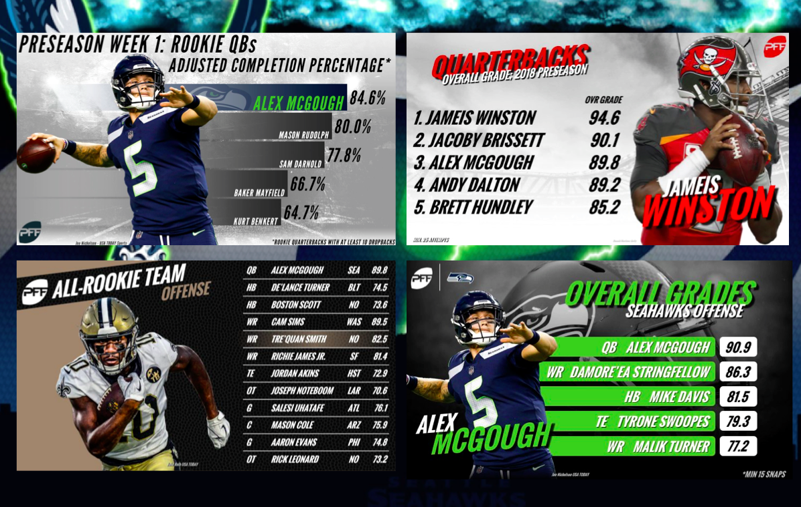
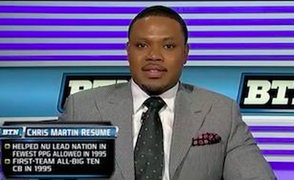

NFL Combine 2020
DAYS HOURS MINUTES SECONDS
NFL Draft Day 2019
DAYS HOURS MINUTES SECONDS
Natrell Jamerson featured on BTN leading up to the 2018 NFL Draft.
Left: Wisconsin's Natrell Jamerson
Natrell Jamerson showcased versatility, athleticism and strength as much as anybody on Wisconsin’s football roster over the past few years.
Jamerson began his Wisconsin career as a wide receiver before moving to cornerback in his sophomore season. He spent two seasons at cornerback and then found a home as a starting safety in 2017. Jamerson also was a dangerous weapon in the kick return game.
During his Badgers career, Jamerson played in 47 games with 16 starts. He logged 88 tackles with 5 tackles for a loss, 14 pass breakups and 2 interceptions. He also returned 38 kicks for 784 yards — an average of 20.6 yards per return.
Jamerson’s NFL draft stock has risen this offseason. He earned defensive MVP honors at the 2018 East-West Shrine Game. Jamerson’s 4.4-second 40-yard dash at the NFL combine tied for the second fastest among safeties there. His 25 bench-press reps at 225 pounds tied for first. Two weeks later, Jamerson excelled at Wisconsin’s pro day, increasing his vertical jump from 35½ to 38 inches. He improved his broad jump by three inches to 10 feet 3 inches.
Jamerson was selected by the New Orleans Saints in the fifth round with the No. 164 overall pick in the 2018 NFL Draft on Saturday. Here is his path to the draft.
Recruiting recap: Jamerson was rated as a 3-star prospect and the No. 131 wide receiver in the 2014 class, according to the 247Sports composite rankings. He finished his career at Vanguard High School in Ocala, Fla., with 119 catches for 2,096 yards and 42 touchdowns. Jamerson earned first-team Class 6A all-state honors by The Associated Press in his senior season after recording 68 catches for 1,195 yards with 17 touchdowns.
Wisconsin represented Jamerson’s first high-major college football scholarship offer, and he jumped at the opportunity. Jamerson visited campus to watch Wisconsin crush Indiana 51-3 on Nov. 16, 2013. Four days later, he committed to the Badgers. Jamerson’s other scholarship offers were from Old Dominion, FIU, Jacksonville, Middle Tennessee, UAB and Weber State.
Jamerson played in 12 games at wide receiver as a freshman at Wisconsin, logging 1 rushing attempt for 23 yards. He moved to cornerback in 2015 and also became a return man who was difficult to contain. Jamerson scored on a 98-yard kickoff return for a touchdown against Maryland.
Jamerson battled a left leg injury in 2016 but still played in eight games with two starts as the team’s nickel cornerback. He moved to safety as a starter in his senior season in 2017 and tallied 51 tackles with 10 pass breakups and 2 interceptions, including 1 returned for a touchdown.
“I think Natrell’s best football is still ahead of him,” Wisconsin defensive coordinator Jim Leonhard said last week. “I’ve heard a lot of the conversations, whether he’s a corner or a safety. A lot of people on both sides of the fence would start him one or the other. I think as a safety, he has more value at that level because it’s a pass-oriented game. Physicality and coverage ability from the safety position is extremely valuable up there. College football is more of a run game, so a little bit different deal. So I think if he’s playing safety, his best football is ahead.
“Even at corner, he’s really, really new to defense. He played as a sophomore at corner, was hurt most of his junior year and then moved to safety. So it’s not like he’s ever really been able to just focus on, ‘This is who I am, this is how I get better.’ So in my opinion, it’s a no-brainer the talent that he has. It’s just getting him that experience and figuring out who’s he going to be, what’s his role going to be at that level?”
Alex McGough Takes Over PFF
Chris Martin featured as an analyst on BTN.
